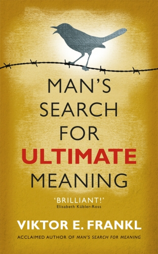

Library › Psychology & People
Man's Search for Meaning — Summary & Key Lessons

A psychiatrist survives Auschwitz and discovers: those who have a WHY to live can bear almost any HOW.
📖 OPEN THE FULL INTERACTIVE BREAKDOWN →🌐 Read it in Hindi, Hinglish, Gujarati, Tamil & 22 more languages — free, with audio.
💡 The Big Idea
Frankl entered Auschwitz a psychiatrist and left the camps having tested his theory in humanity's darkest laboratory: survival correlated less with strength or cunning than with MEANING — a reason pointing beyond the self. Part one recounts the camps with clinical honesty; part two presents logotherapy: man's primary drive is not pleasure (Freud) or power (Adler) but meaning, found through three channels — creating a work or doing a deed, experiencing love or beauty, and the attitude taken toward unavoidable suffering. The existential vacuum of modern life (boredom, Sunday neurosis, the chase for pleasure and status) is meaning-hunger misdiagnosed. Happiness cannot be pursued; it must ensue — as the side effect of a life aimed at something that matters.
🧠 The 5 Key Lessons
Lesson 1: The Last Human Freedom
Part I: Experiences in a Concentration Camp
The camps stripped everything — name, family, possessions, hair, health, future — deliberately reducing persons to numbers. And yet, Frankl observed, the SS could not standardize the inner response: some prisoners collapsed into apathy, some turned predator, and some walked through the huts comforting others and giving away their last piece of bread. 'They may have been few in number, but they offer sufficient proof that everything can be taken from a man but one thing: the last of the human freedoms — to choose one's attitude in any given set of circumstances.' This freedom is not diminished by circumstances; it is REVEALED by them. Between stimulus and response, the space remains — and what a person becomes, even in a camp, remains an inner decision.
📖 Example: Frankl's own practice of the freedom: marched to worksites in freezing dawn, beaten, starving, he discovered he could detach — holding imagined conversations with his wife Tilly (not knowing she was already dead), her image more luminous than the sunrise.… Read the full example →
⚡ Do this: Identify your current 'given' — the circumstance you cannot change. Write two columns: what it controls (conditions) and what remains yours (response, attitude, meaning assigned). Live from column two this week.
Lesson 2: A Why Can Bear Almost Any How
Part I: The Psychology of the Camp Inmate
Frankl watched the difference between prisoners who survived the unsurvivable and those who quietly died within days of 'giving up' — the moment visible to everyone: the man who refused to rise, lit his last cigarette, and was gone within 48 hours. The differential wasn't physique; it was FUTURE — something waiting: a child, an unfinished work, a person who needed them. Quoting Nietzsche — 'he who has a why to live can bear almost any how' — Frankl made it clinical: when a prisoner said 'I have nothing to expect from life anymore,' the only working answer inverted the question: life still expects something from YOU. Meaning is not found by interrogating life for answers but by ANSWERING what life asks of you, task by task, hour by hour.
📖 Example: Two suicidal prisoners, one conversation each: for the first, Frankl uncovered a child waiting in a foreign country; for the second, a scientist, an unfinished series of books that no one else could complete. Both lived — not because camp improved, but… Read the full example →
⚡ Do this: Name what waits for you — the person, work, or duty that is specifically YOURS and would go unfinished without you. Write it where you'll see it on hard mornings. If the answer is genuinely unclear, treat FINDING it as this year's task.
Lesson 3: The Three Roads to Meaning
Part II: Logotherapy in a Nutshell
Logotherapy's map: meaning is discovered (not invented) through three channels. (1) CREATIVE — by creating a work or doing a deed: the meaning of achievement and contribution. (2) EXPERIENTIAL — by encountering goodness, truth, beauty, nature, culture — or, supremely, another human being in love (love as the only way to grasp another person in their innermost core; seeing potentials in the beloved that they then actualize). (3) ATTITUDINAL — when facing a fate that cannot be changed, the stand one takes toward it: 'when we are no longer able to change a situation, we are challenged to change ourselves.' Crucially, meaning is concrete and situational — not Life's Meaning in the abstract, but THIS life's task, THIS hour's demand, unique to each person and unrepeatable. Everyone's meaning-question is asked back: life is the questioner.
📖 Example: The attitudinal channel, in Frankl's consulting room: an elderly doctor, inconsolable two years after his wife's death, asked what would have happened had HE died first. 'She would have suffered terribly.' — 'You see, doctor: that suffering has been spared… Read the full example →
⚡ Do this: Audit your three channels this month: What am I creating? What/whom am I fully experiencing? Where is my unavoidable suffering, and what stand am I taking toward it? Strengthen the weakest channel with one concrete act.
Lesson 4: The Existential Vacuum
Part II: The Existential Vacuum
The modern predicament Frankl diagnosed decades early: unlike animals, no instinct tells us what we must do; unlike our ancestors, no tradition tells us what we should do — and many people no longer know what they WANT to do. The result is the existential vacuum: boredom, apathy, the 'Sunday neurosis' (depression that arrives when the busy week stops and inner emptiness becomes audible). The vacuum gets filled with compensations — the will to money, pleasure, status; distraction, conformity ('doing what others do'), or totalitarianism ('doing what others command'). Frankl's contrarian corollary: mental health requires TENSION — the gap between what one is and what one ought to become. Equilibrium ('homeostasis') is not the goal; a worthwhile struggle is. What people need is not a tensionless state but a task worthy of them.
📖 Example: Frankl's evidence spanned continents: students reporting emptiness amid affluence; the correlation he cited between meaninglessness and the triad of depression, aggression, and addiction. His architecture metaphor answers the 'less stress' industry:… Read the full example →
⚡ Do this: Check yourself for vacuum symptoms: does stopping feel like emptiness? Are pleasure/status/scrolling doing meaning's job? If yes — don't seek relaxation; seek a task heavy enough to organize you, and accept its tension as health.
Lesson 5: Happiness Must Ensue — Paradoxical Intention
Part II: Logotherapy as a Technique / The Case for Tragic Optimism
Two mirrored mechanisms: HYPER-INTENTION — the direct pursuit of happiness, pleasure, sleep, or performance destroys them precisely because they are by-products (aim at happiness and you miss; aim at a reason and happiness ensues). And its therapeutic twin, PARADOXICAL INTENTION: anticipatory anxiety creates the feared event (fear of blushing produces blushing; fear of insomnia banishes sleep) — so Frankl prescribed intending the fear: the insomniac tries to stay awake; the trembler tries to tremble harder — humor and self-detachment snap the anxiety loop. The book closes with tragic optimism: saying yes to life despite pain, guilt, and death — turning suffering into achievement, guilt into responsible change, and mortality into the very reason to act now. 'What is to give light must endure burning.'
📖 Example: The sweating physician: terrified of sweating in public, which reliably produced floods of sweat, he was told to deliberately show his audience how MUCH he could sweat — 'I only sweated a quart last time; this time I'll pour ten!' The absurdity broke the… Read the full example →
⚡ Do this: Stop chasing the by-products: pick the reason (task, person, standard) and let mood follow. For one recurring anxiety, try paradoxical intention this week — exaggerate and invite the feared symptom with humor, and watch the loop lose its grip.
✅ 5-Step Action Plan
- Map your unchangeable 'given' vs. your remaining freedoms — live from the latter.
- Write down what waits for you; make it visible for hard mornings.
- Strengthen your weakest meaning-channel: create, experience, or take a stand.
- Replace vacuum-fillers with a task heavy enough to organize your life.
- Aim at reasons, not moods — and break one anxiety loop with paradoxical intention.
💬 Best Quotes from Man's Search for Meaning
- “Those who have a 'why' to live can bear with almost any 'how'.”
- “Everything can be taken from a man but one thing: the last of the human freedoms — to choose one's attitude in any given set of circumstances.”
- “What is to give light must endure burning.”
Interactive version: mark lessons as read, listen in your language, share quote cards.